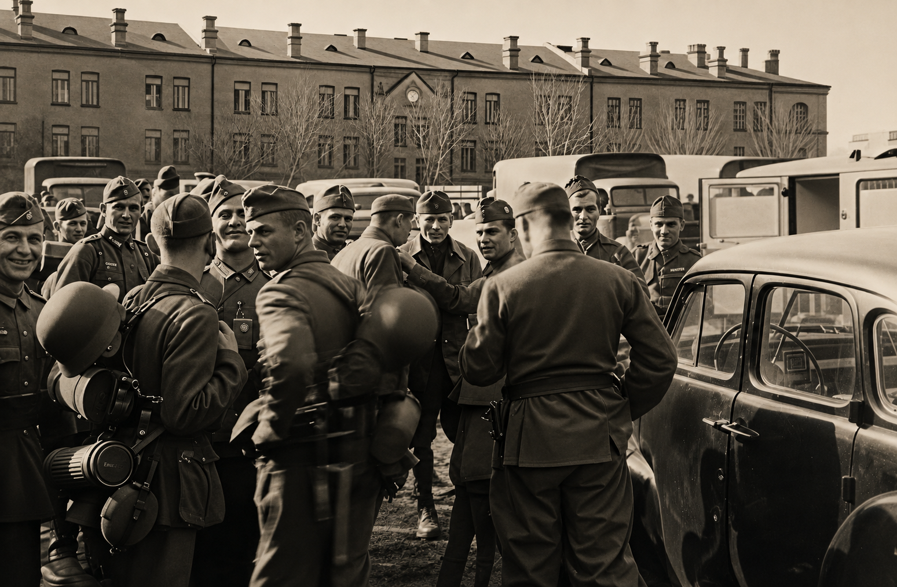
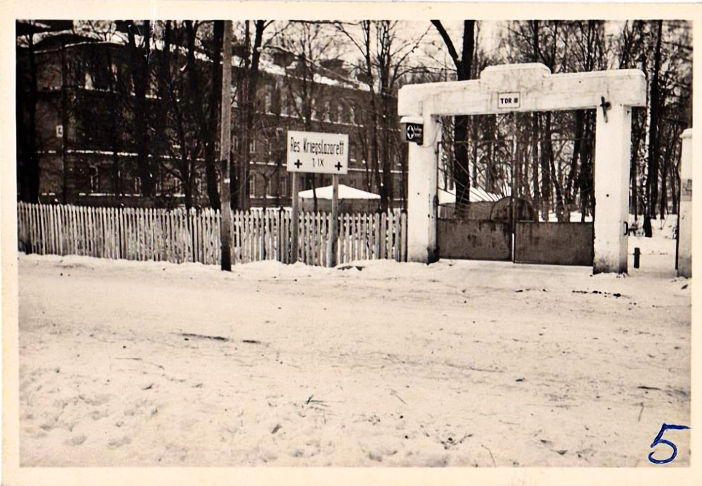
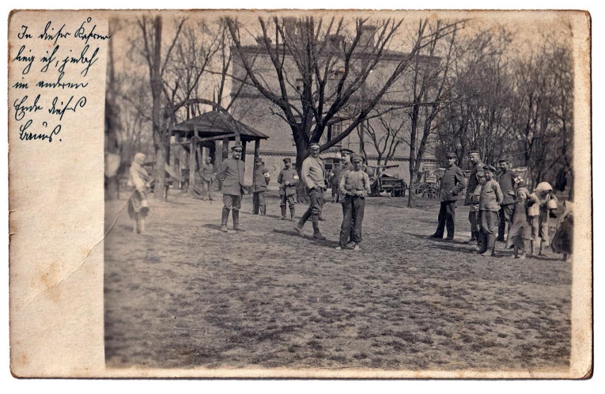
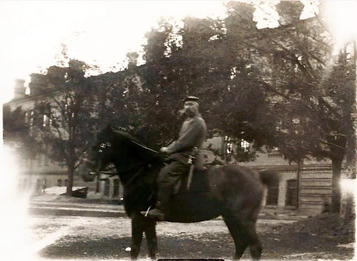
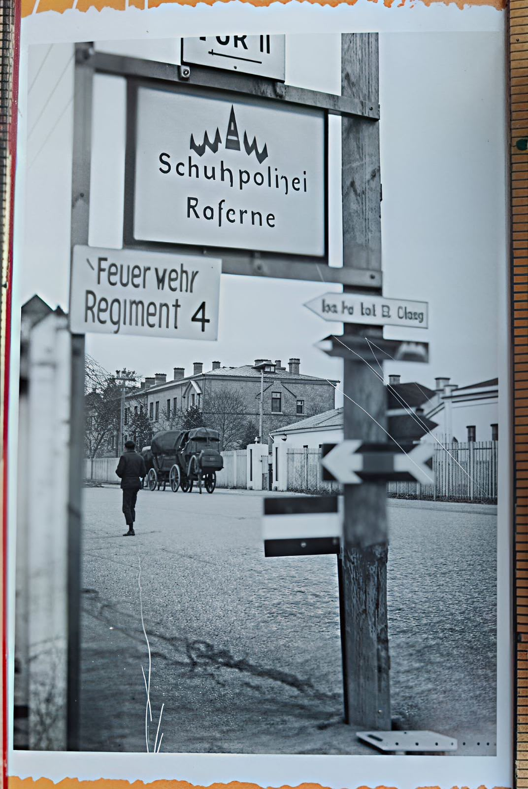
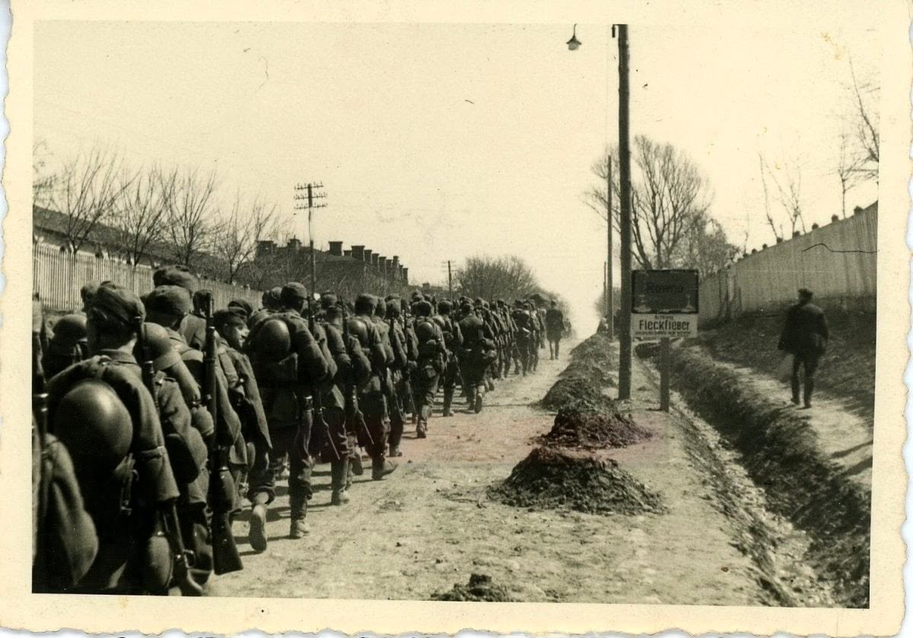
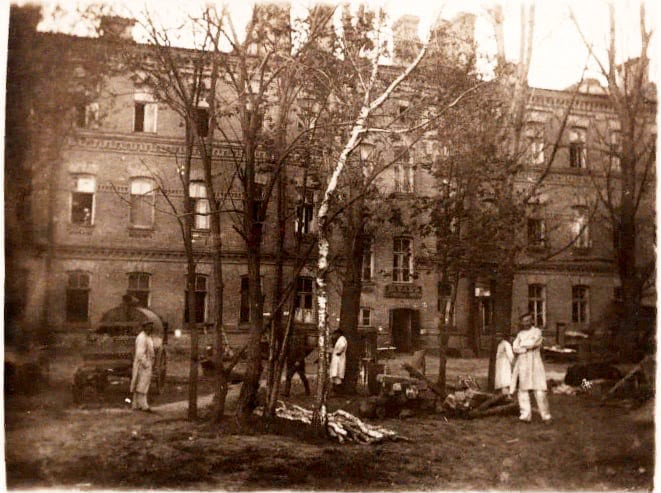

Регіональний Центр КіберзахистуRegional Cyber Defense Center
п'ять епох однієї будівліfive eras of one building
1939–1945
Воєнний періодWar era
У роки Другої світової війни Рівне пережило зміну двох окупаційних режимів, масові репресії, Голокост, примусову працю та бойові дії. Із 1941 по 1944 рік місто було столицею Райхскомісаріату «Україна», де розміщувалися органи німецької цивільної та військової адміністрації. Волинські казарми продовжували використовуватися як військовий комплекс. Після визволення Рівного 2 лютого 1944 року будівлі гарнізону були відновлені та знову служили військовим потребам.During World War II, Rivne went through two occupation regimes, mass repressions, the Holocaust, forced labor, and combat operations. From 1941 to 1944, the city was the capital of the Reichskommissariat Ukraine, hosting the offices of the German civil and military administration. The Volyn barracks continued to be used as a military complex. After Rivne was liberated on February 2, 1944, the garrison buildings were restored and once again served military needs.

Перегрупування нiмецьких вiйськ на фонi будiвлiRedeployment of German Troops Against the Backdrop of the Building#001

Вхід до німецьких лазаретівEntrance to German field hospitals#002

Листівка німецького солдата з написом "У цій казармі я ніс службу"Letter from a German soldier with the inscription "I served in this barrack"#003

Вершник поблизу будівліA rider near the building#004

Казарми по вулиці Соборній, часів перебування в місті німецьких військBarracks on Sobornaya Street, during the period of German military presence#005

Марш військових вулицями містаMilitary parade on the streets of the city#006

Тимчасові лазарети в будинках гарнізонуTemporary hospitals in the garrison buildings#007